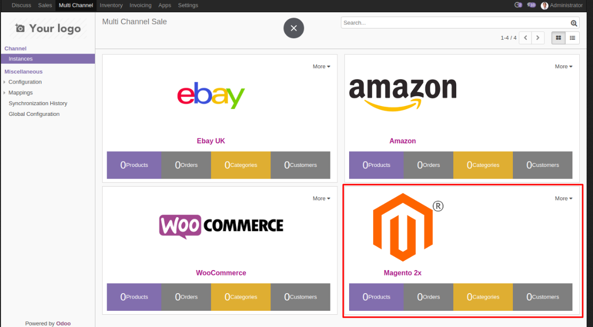
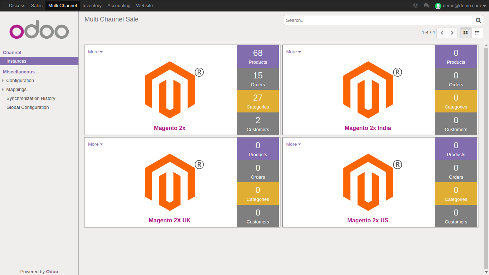

Multi Channel Magento 2.x Odoo Bridge
An upgraded module made to be compatible with the new Magento 2 version to allow you to integrate your Magento 2.x store with Odoo. Multi-Channel Magento 2.x Odoo Bridge/Connector allows you to manage your Magento shop using Odoo.
Connect your Magento store and handle orders, products, shipping, delivery, inventory and much more form the single screen.
Import/export products, products categories and attributes from Magento 1.x to Odoo and conversely. Import orders and customers from Magento 2.x to Odoo. Integrate and manage multiple Magento instances from the same screen and single Odoo server. Real-time order status sync from Odoo to Magento. Set the scheduler to auto-update the data in Odoo from Magento periodically.
Moreover, you also get Multi-Channel sale Module with this module which is the base module to integrate different e-commerce channels with Odoo. You can connect various store like Amazon, e-Bay, Magento etc with Odoo and manage them simultaneously.
Dashboard
Neat Dashboard Designed To Show All The Data At A Glance
Connect your Magento store with Odoo to use the dashboard to view the Magento store data on one screen.
{kind=link}
The number of products and product categories present in your Magento store is displayed on the dashboard.
Look at the total number of orders placed and the total number of customers in your Magento shop from the dashboard and manage them in Odoo.
The relevant shop details for multiple Magneto instances can be seen directly from the dashboard at once.
Not just that, you can integrate many other e-commerce channels/marketplaces to Odoo like Amazon, eBay, Woocommerce, Prestashop etc. and manage all of them from the same dashboard.
Order Management
Manage Orders using Multi-Channel Magento Odoo Bridge/Connector
Integrate your Magento store using Odoo and manage your Magento orders in Odoo backend.
No need for manually importing the orders. The orders can also be imported from Magento to Odoo with a click so you do not have to do it manually.

Real-time automatic synchronization of the orders placed on Magento store to Odoo. Note: Once you have purchased the module, please send a request to the support team to provide the code to activate real-time order synchronization feature from Magento to Odoo.
Any changes made to the order status on Magento store can be set to automatically reflect on Odoo's end and vice-versa.
Similarly, changes made to the product stock after an order is placed on Magento store are also reflected in the Odoo backend in real time.
Products Management
Manage Products With Multi-Channel Magento Odoo Bridge/Connector
With bidirectional sync feature you can import/export Products and product categories from Magento to Odoo and vice-versa to manage your Magento store using Odoo.

Also, Import/Export product attributes from Magento to Odoo and vice-versa.
Any changes to the product information in the Odoo backend can be easily synced to Magento.
The changes made to the product stock on one end gets automatically reflected on the other end in real time i.e from Odoo to Magento and vice-versa.
Inventory Management
Connect your Magento store with Odoo to effectively manage your inventory using Multi-Channel Magento Odoo Bridge/Connector.
Check the delivery status of every order, configure procurement rules and generate delivery slips from Odoo backend.

Track and effectively manage warehouse across all locations to handle inventory operations for your Magento in Odoo.
Handle stock operations across different warehouses and maintain the continuous flow of products for your Magento store using Odoo.
Effectively track the movement of the products to Manage your entire Magento store easily using Odoo.
Multiple Instances
Synchronize And Manage Multiple Instances of your Magento 2.x Store In Odoo
Handling multiple website on Magento 2.x exponentially increases the managing and maintenance workload.
Odoo Multichannel sale module offers a simple yet powerful backend to manage all your Magento 2.x instances from single screen.
You can easily integrate multiple instances of Magento 2.x store in Odoo and manage them simultaneously.
{kind=link}
All the synchronized Instances show up on the Odoo Multi-Channel Dashboard so you can get a quick overview.
Note: You can integrate upto 3 instances of Magento store with Odoo. To integrate more than 3 instances please contact our Support Team here.
Customer Invoices, Reports And Payments
Manage Customer and Invoicing With Multi-Channel Magento Odoo Bridge/Connector
Managing Magento using Odoo lets you handle accounting from the Odoo backend.
Generate sales reports, customer invoices, and bills at Odoo backend with Multi-Channel Magento 2.x Odoo Bridge/connector.
No more separate records for the sales and purchase orders when Odoo handles it all in the same screen to help you oversee every operation.
Manage invoices of sales orders, generate credit notes and track payments details for every customer with simple clicks to manage the bills for your Magento store using Odoo.

A separate purchase menu to fulfill your requirements for procuring orders so you can effortlessly manage your Magento store using Odoo.
Generate and manage vendor bills, taxes and credit notes for your purchase orders.
Map And Import Taxes, Payment and Carrier/Shipping Methods
Connect your Magento store with Odoo and set up taxes, carrier/shipping methods and payment methods in Odoo (if not already saved).
Once configured in Odoo, they get automatically imported to the Odoo while synchronizing orders.
Other Connected Channels:


Complimentary Support
You will get 90 days free support for any doubt, queries, and bug fixing (excluding data recovery) or any type of issue related to this module.